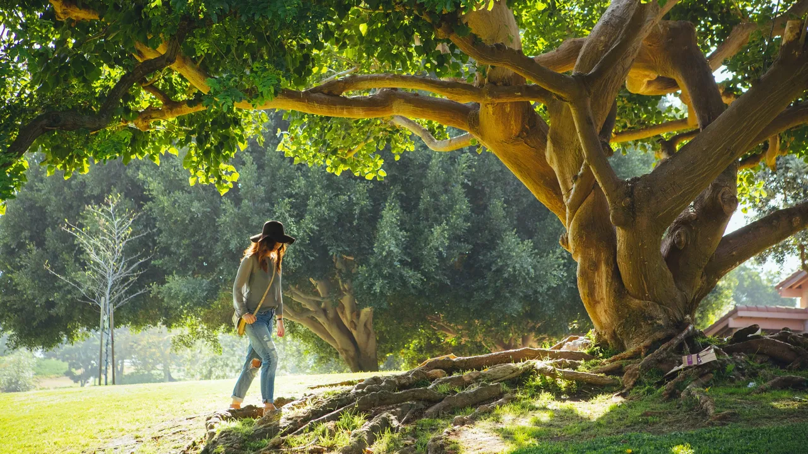

La naturaleza es un tesoro invaluable que nos brinda vida, aire limpio y paisajes inspiradores. Desde las majestuosas montañas hasta los serenos océanos, cada rincón de nuestro planeta está lleno de maravillas que merecen ser protegidas y preservadas para las generaciones venideras.
Nuestra misión es simple pero crucial: defender y conservar nuestro entorno natural. Cada acción que tomamos, ya sea pequeña o grande, tiene un impacto en el mundo que nos rodea. Desde reciclar y reducir nuestro consumo de plástico hasta participar en actividades de reforestación y limpieza de playas, cada paso que damos en esta dirección nos acerca más a un futuro sostenible y próspero.
¡Únete a nosotros en esta emocionante aventura! Juntos, podemos marcar la diferencia y crear un mundo donde la belleza de la naturaleza florezca sin límites, donde las especies en peligro de extinción sean protegidas y donde las futuras generaciones puedan disfrutar de la misma maravilla y diversidad que nosotros tenemos el privilegio de experimentar hoy.
